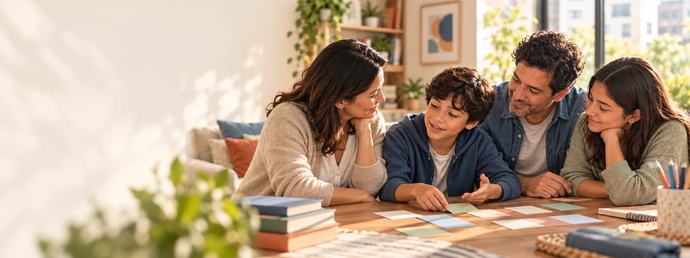
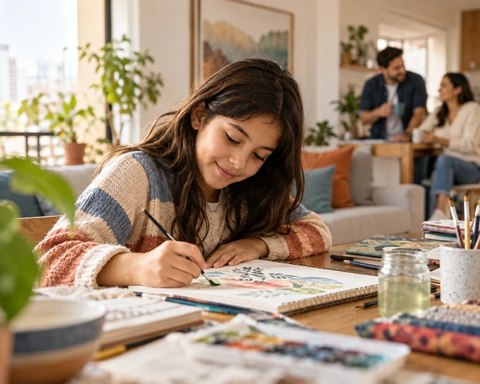
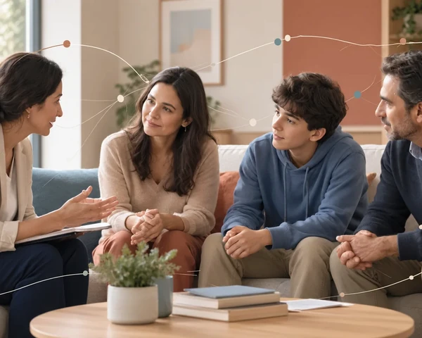
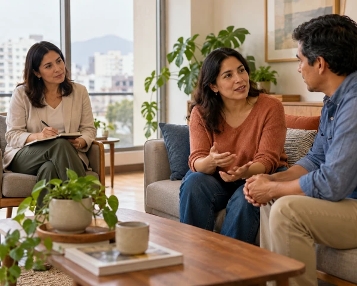
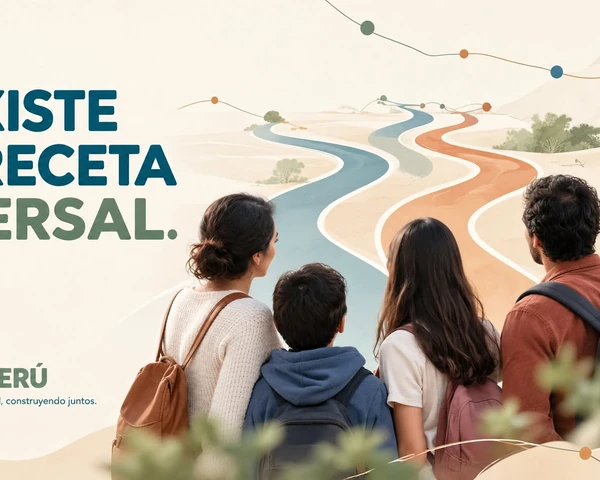
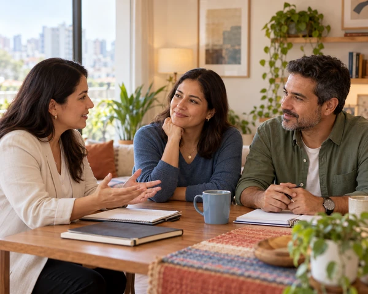
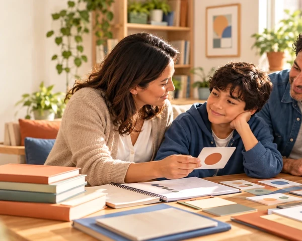
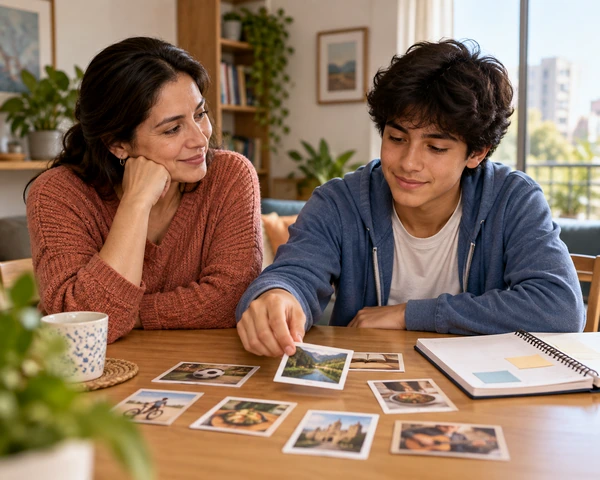

Qué es Raíces
Acompañar sin corregir. Comprender antes de actuar.
Raíces es un proyecto social en construcción que acompaña a familias a comprender situaciones, organizar información y construir condiciones y apoyos alrededor de cada persona.

Nuestro origen
Una experiencia familiar convertida en una práctica responsable
Raíces nace de la experiencia de una madre frente a información fragmentada, decisiones difíciles y la necesidad de coordinar familia, escuela y profesionales.
Patricia, fundadora de Raíces, convierte años de escucha, estudio y aprendizaje familiar en herramientas orientativas para acompañar a otras familias. Raíces no reemplaza la atención clínica: ayuda a comprender, organizar y construir mejores condiciones alrededor de cada persona.
Ocho principios
La filosofía que orienta cada decisión

La persona antes que el diagnóstico.Una etiqueta no define una vida ni determina una única ruta.
Escuchar antes de intervenir.La familia y la persona conocen aspectos esenciales de su realidad.
Observar antes de asumir.Los hechos y el contexto ayudan a formular mejores preguntas.
No existe una receta universal.Una posibilidad puede ser útil en un momento y requerir ajustes después.
El adulto también necesita apoyo.Acompañar no debe convertirse en culpa ni soledad. Persona, relaciones y entorno se influyen.No miramos una conducta de manera aislada.
Persona, relaciones y entorno se influyen.No miramos una conducta de manera aislada.
Lo que funciona puede evolucionar.Las necesidades y los apoyos cambian con el tiempo.
Acompañar, no corregir.Buscamos participación, bienestar y autonomía progresiva.
Nuestra posición
Crear condiciones para que la vida pueda sostenerse
El árbol y sus raíces representan una red de condiciones, relaciones, conocimientos y apoyos. No simbolizan resistir por resistir, sino construir un entorno donde la persona pueda desarrollarse y participar.
Ver cómo se traduce en acciones